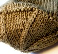

|
||
Premium Patterns Wintry Mix Mitts Love Bytes HawkeyeFree Patterns Kiddie Cadet Summerlin Ruffled Scarf Seamless DS Sock Simply Seamless Pouch Myriads of MushroomsExtras DIY Mitten Blocker Felt Patch Tutorial Yarn Dyeing Tutorial Needle Pouches Knitting Journal |
Cascade 220 SuperwashReviewed by Alice Schnebly
Manufacturer: Cascade Yarns First LookThe first thing that really impressed me when I first saw Cascade 220 Superwash is the sheer size of this ball. It really dwarfs other washable wools in comparison—most other 100% washable wool alternatives that I’ve seen have a put-up of less than 100 yards. The yarn is soft and and squishy in the ball. It's not as soft as some options (i.e. Karabella Aurora 8) but it isn't unpleasant to the touch. Cascade 220 Superwash is also available in so many colors that it makes it hard to choose; when looking for an olive-y green, I had almost ten options. Some balls of certain colors appear to unevenly dyed. The varation in color is subtle but noticable under certain lights (my personal experience was with color #810). You may also run across the occasional slub or flaw in the yarn, but they seem very few and far between. It's a WashAt first I was hesitant about throwing a hand knit in the washer. It really is a daunting thought to put something that seems so delicate into the hands of a machine, so I decided to test the process out on a swatch. I used my normal cold-wash setting, added a towel for some extra agitation, and a small amount of regular old detergent. For good measure I did two cycles, just to make sure my swatch really got the full treatment. From there I put it in the dryer on low heat for about 15 minutes until dry. When I pulled out my swatch it was seemingly unscathed. It basically looked how it had gone in—a simple stockinette square. It wasn’t felted or deformed, and it wasn’t a big ball of fuzz either. In fact, I think it came out better than it went in. My swatch softened up slightly (though it wasn’t scratchy before by any standard) and my stitches evened out significantly. My gauge did change (5.5 stitches/inch on size US 7 before washing, and 5 stitches/inch after), but that’s to be expected with most natural fibers. One thing I noticed, that might be a magnified in larger item, is that Cascade 220 Superwash loses a bit of its structure after washing. Items become a little floppier and less rigid—which isn’t always a bad thing—but might present a problem in large, heavy items that you don’t want to have that added drape. Wear, oh, wearI’ve made a couple of items out of Cascade 220 Superwash, none as large as a sweater (yet), but they’ve certainly held up to wear pretty well. One of my daughter’s hat saw almost daily wear—and being thrown on the asphalt, grass, and stretched every which way—and the Cascade has taken it like a champ. There is some fuzz around the edges, nothing I get too worried about and will pick off now and then if it gets noticeable, but overall it’s worn quite well. Pros
Cons
ConclusionsOverall, I think this is a great yarn, and I will definitely be using it again in the future. I'd consider this yarn as a nice choice to knit a garment for my husband, who is particularly hard on his clothes. It would also be a good option for baby, children, and home decor items where washability is an important factor. I haven’t found that it goes on sale often online, so if you have a LYS that carries it I’d stock up during a big sale. Cascade 220 Superwash is featured in our Kiddie Cadet pattern. |
   Recent ReviewsRecent Posts
 Our Favorites
|
| © 2007 KathrynIvy.com | ||
{kind=link}
{kind=link}
{kind=link}